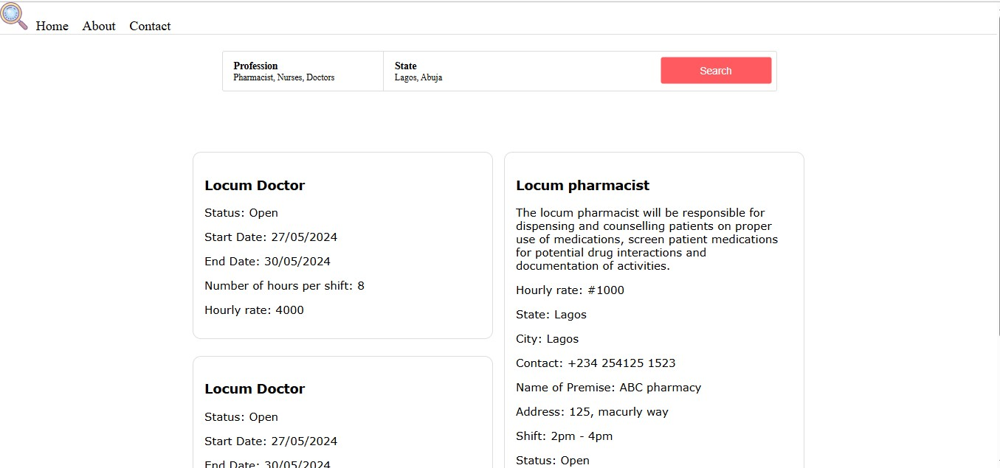
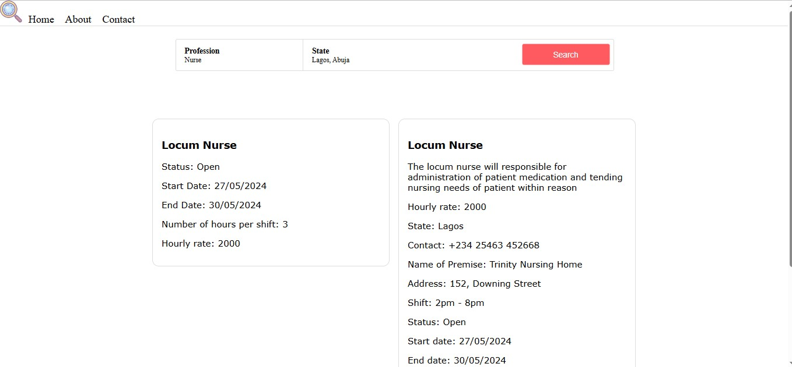
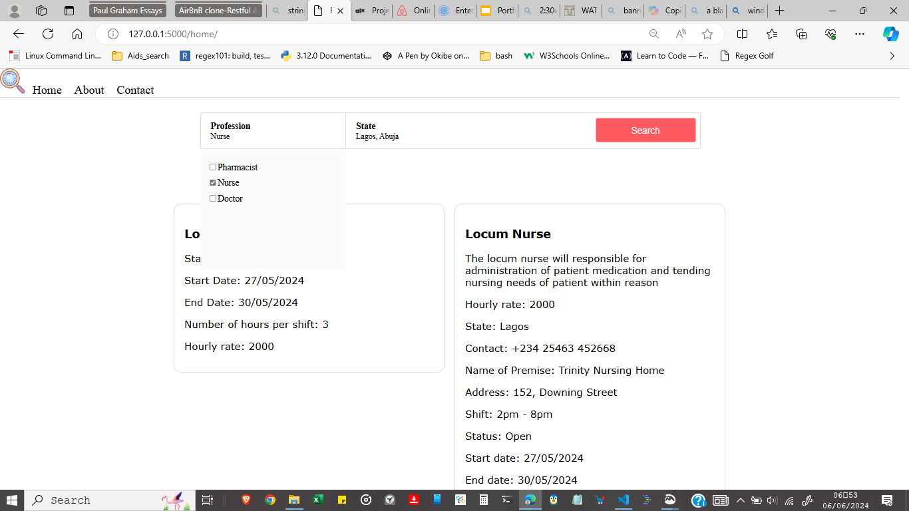

The search bar filter's jobs by occupation and location
 A dropdown menu containg occupation that can be checked or unchecked to refine the filter
I created Find a Locum because, as a healthcare worker myself, I often found it challenging to juggle my primary job while seeking extra income through part-time shifts. The process of finding temporary work was frustratingly time-consuming and inefficient. I wanted a solution that made it easier for healthcare professionals like me to quickly and conveniently find suitable locum opportunities. By developing this platform, I aimed to streamline the entire process, allowing us to focus more on our patients and less on the hassle of job hunting.
Source Code Connect on linkedin Connect on twitter Sign Up